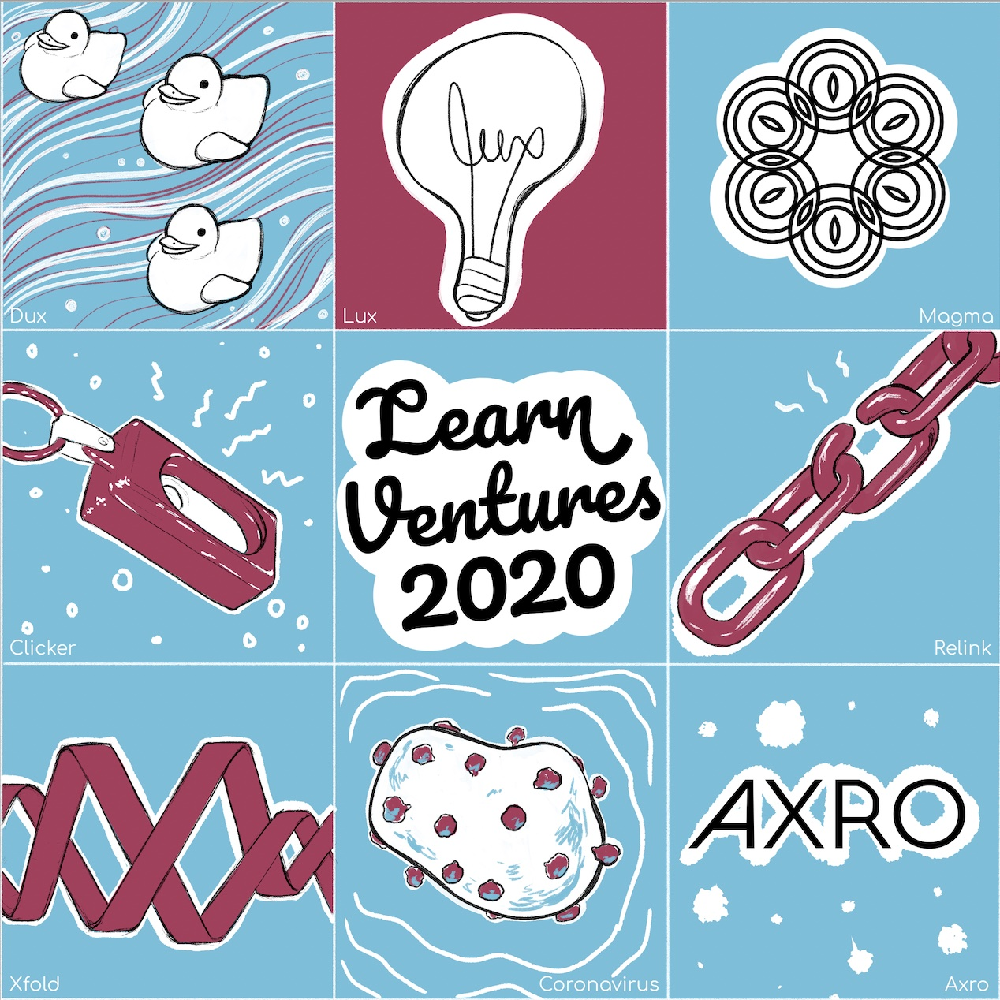
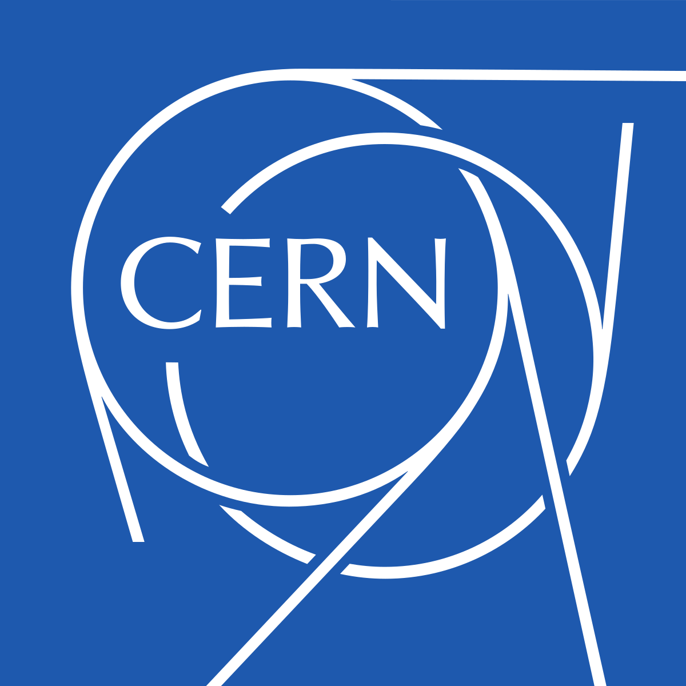
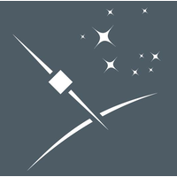

Programming Languages
- Python (with matplotlib, pandas, scipy, numpy, etc.)
- CUDA for GPU acceleration / parallel processing
- C++ for Arduino and Teensy microcontrollers
- Swift for IOS development
Return the k-most-similar images to a query image. Images are first compressed to a fingerprint using state of the art CNN models, and image similarity is computed as euclidean distance between fingerprints.
Compressing images to fingerprints enables similar image search speeds of ~1 second across image databases of size 70 GB on a single CPU.

Aenean ornare velit lacus, ac varius enim lorem ullamcorper dolore. Proin aliquam facilisis ante interdum. Sed nulla amet lorem feugiat tempus aliquam.
Some colleagues and I built LED boards to display the component frequencies of music. The boards were powered by arduinos running custom signal processing code implemented in C++, and were controlled by an iPhone app implemented in Swift.
The project was scaled from a 1.5 foot LED board to a 15 foot model, and attracted funding from MIT's Sandbox Innovation Fund.
The velocity and lifetime of muons, a type of relativistic particle created in the upper atmosphere, are measured with a combined statistical analysis of monte carlo simulations and laboratory data. The results offer yet another compelling proof of Einstein's Special Theory of Relativity.
Monte carlo simulation was implemented in python using numpy and matplotlib, and statistical analysis involved linear regression with scikit-learn and scipy.
In December 2021, I will graduate MIT with a degree in Physics and a minor in Computer Science. I started college with the intent of becoming an astrophysicist, so my first three years of school were filled relativity, thermodynamics, classical mechanics, quantum mechanics. Somewhere along the way I took my first programming class, and I started using Python as a tool to advance my career in astronomy research.
I was introduced to data science and machine learning while doing physics research internships on projects like exoplanet detection, gravitational wave analysis, and algorithm developement for the Large Hadron Collider. I really enjoyed the research process, and loved focusing on long-term difficult problems rather than solving simple day-to-day tasks, but felt that my contributions to these large scientific organizations were sometimes a little too small to be felt sincerely. So starting my junior year, I focused on using the statistics skills I had gained during astrophysics research to help out at smaller startups.
I began taking more pure math classes - probability, statistics, linear algebra - and computer science classes - machine learning, algorithms and data structures, and I noticed that my years in physics coursework had laid the mathematical background to excel. I also started working at small startups, doing data science for weather prediction and drug design, and couldn't be happier with the change in my work's impact!
Recently, I've been using Coursera to gain skills that I never learned in the classroom. I'm currently enrolled in the SQL for Data Science Specialization, offered by UC Davis. The specialization consists of 4 courses, teaching the basics of SQL querying, data analysis and AB testing with SQL, and distributed computing with Apache Spark.
I really enjoying the online learning format of Coursera, and in the future am planning on completing courses in big data analysis with Scala, visualization with Tableau, and cloud-computing with GCP and AWS (to take the certificate exams for both platforms).

At learn ventures, I work on a variety of machine learning and physics simulation approaches to design novel proteins that can be used for treating a multitude of medical conditions. To date, our AI-based drug design pipeline has produced 1000s of new proteins which have been synthesized in lab and are currently undergoing testing for effectiveness in a variety of tasks. This work includes reading new papers every day on state-of-the-art ML and simulation based approaches for drug design, re-implementing models in our own infrastructure, and working with biochemical labs to verify that our in-silico methods work in the real world.
pytorch
GCP
CNNs / transformers

The Large Hadron Collider (LHCb) at CERN collides atomic particles, and then probes the remnants of these collisions to make experimental breakthoughs in particle physics. The LHCb detector outputs data from at the rate of 40 Tbit / s, and this data must be processed in real-time to determine what is useful and what can be thrown away. This determination was originally done by simply threshholding the collision parameters in a cut-based method. During summer 2020, I trained decision tree classifiers to handle this determination instead, allowing for 15% greater accuracy at the same false positive rate compared to cut-based classifiers. The decision trees were implemented in CUDA so that they could run on LHCb's GPU clusters during round 3 of data collection.
scikit-learn
CUDA
decision trees
Enabled by the internet of things, the weather predictions of tomorrow will come not just from weather stations, but also from smartphone sensors, traffic cameras, and many other internet-enabled devices. Cellphone towers, for example, offer a way to measure real-time precipation where no traditional measurement devices are available, as cell signals attenuate while passing through rainfall. During January 2020, I re-parameterized and re-trained an LSTM model to predict rainfall rates based on cell-tower attenuation, improving on Tomorrow.io's older implementation with a 5% accuracy boost. The new and improved model was deployed to run precipitation predictions on 60,000 cell tower links throughout the United States.
tensorflow
GCP
LSTMs / RNNs
Gravitational waves form when two black holes collide and send out ripples in space-time. These ripples can be measured by very sensitive interferometers like LIGO, where a complex algorithm detects faint signals in exceptionally noisy data. In past years, this algorithm has been a match-filtering approach that compares time-series to an extensive template bank of possible signals. However, during 2019, I demonstrated that convolutional neural networks could effectively relpace match-filtering approaches, offering lower latency and higher abillity to interpolate between templates. My CNN architecture performed 1000x faster than the old approach with similar accuracy, allowing a job that previously took 800 CPU cores to run on a single GPU.
tensorflow
GCP
CNNs

Many planets - called exoplanets - exist outside of our solar system. They are first identified as objects of interest by large sky surveys from telescopes like Kepler, and then verified as exoplanets with follow-up radial velocity measurments. During summer of 2018, I characterized 3 new exoplanets from the Kepler object of interest catalog. I Combined data from 340 stellar spectra measurements with ground-based radial velocity measurements using standard Python scientific library (numpy, scipy, matplotlib, pandas). Derived exoplanet parameters that could explain these spectra / radial velocity measurements using a Markov Chain Monte Carlo algorithm.
scipy / matplotlib / numpy
monte carlo